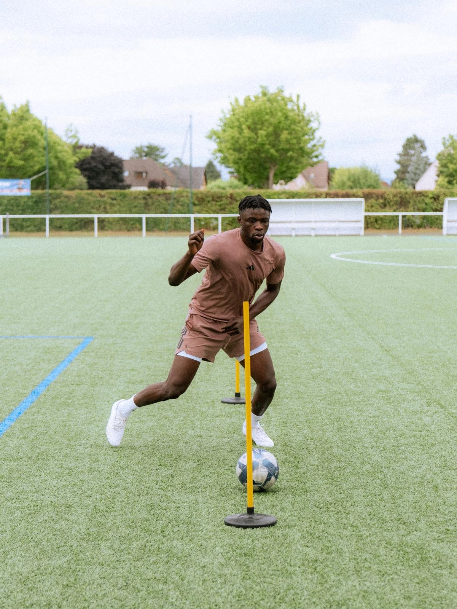
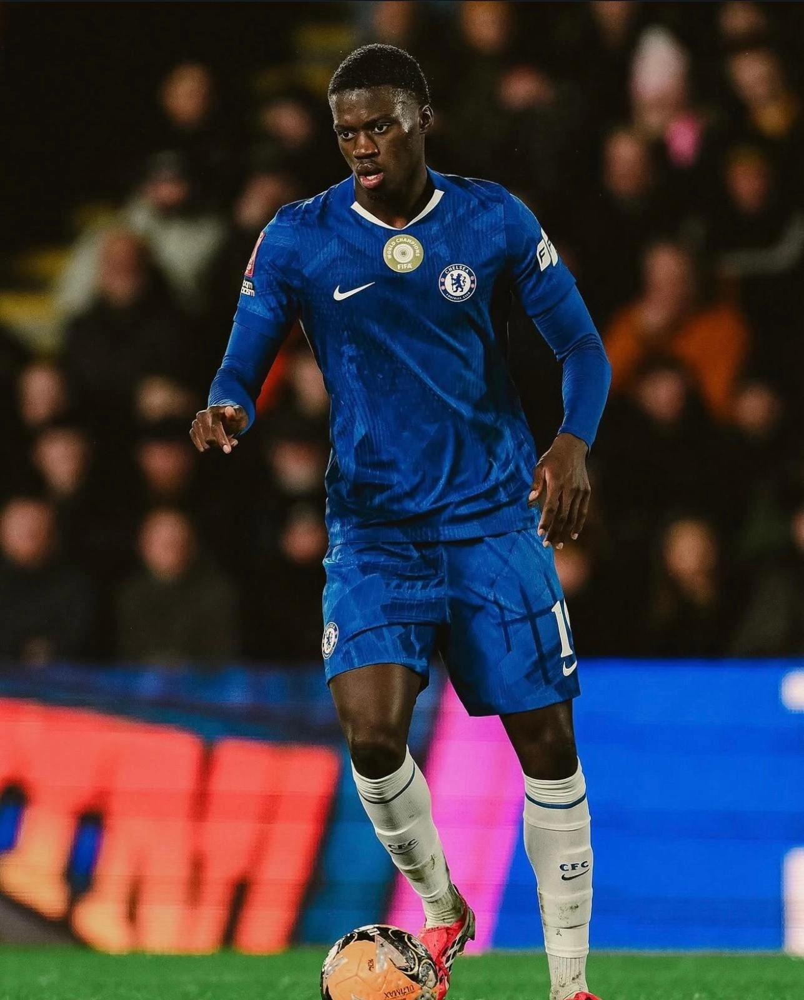
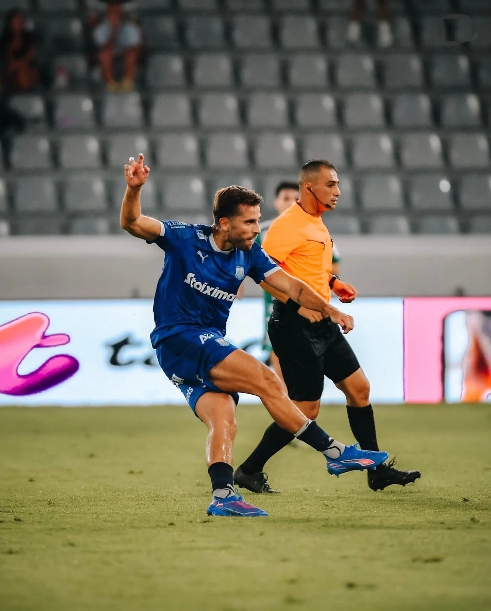
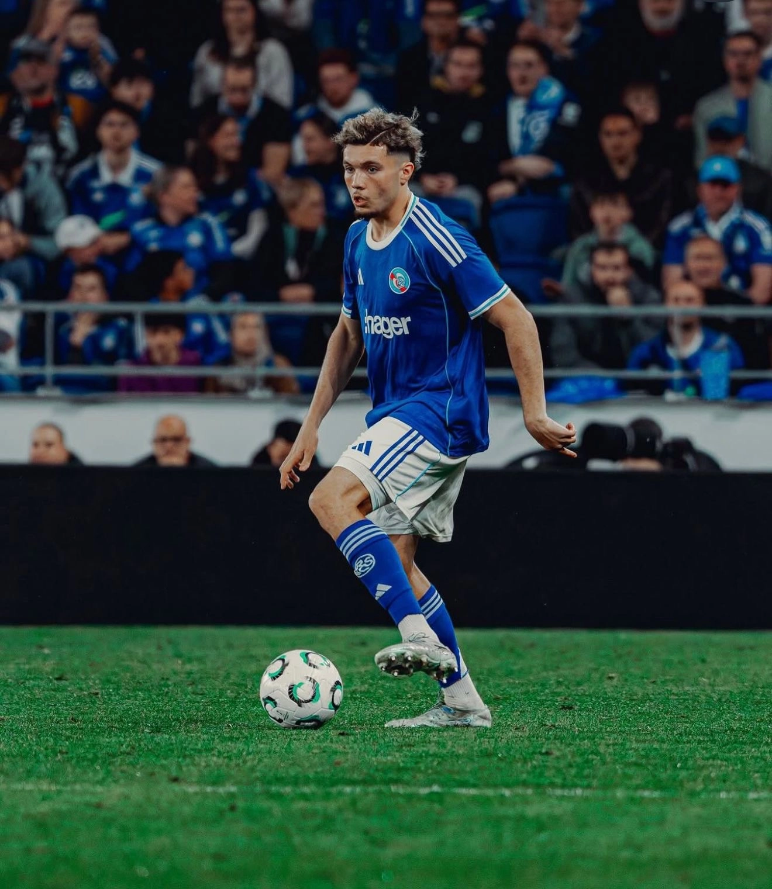
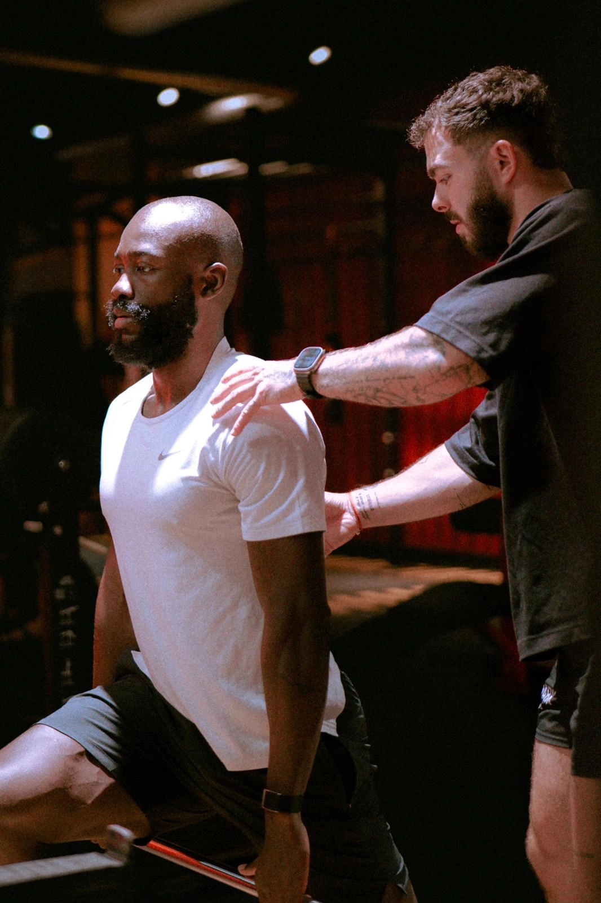

Ils nous font confiance
Faites confiance à ceux
Faites confiance à ceux
qui nous font confiance

Abakar Sylla
RC Strasbourg Alsace


Mamadou Sarr
Chelsea Football Club


Gaetan Weissbeck
Apollon Limassol FC


Samir El Mourabet
RC Strasbourg Alsace

Stéphane Bahoken
Qyzyljar Petropavlovsk